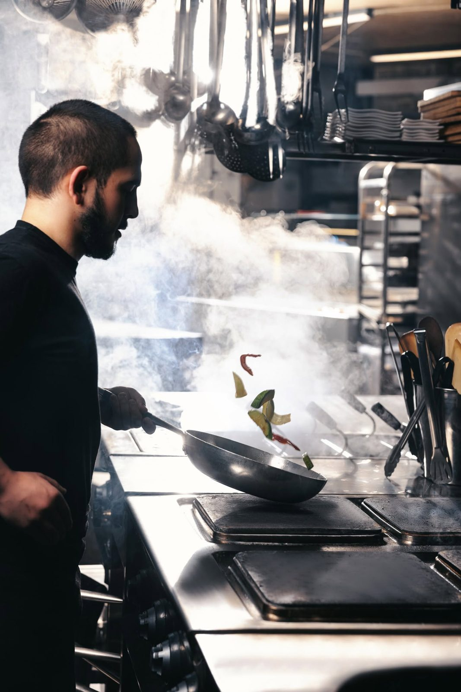
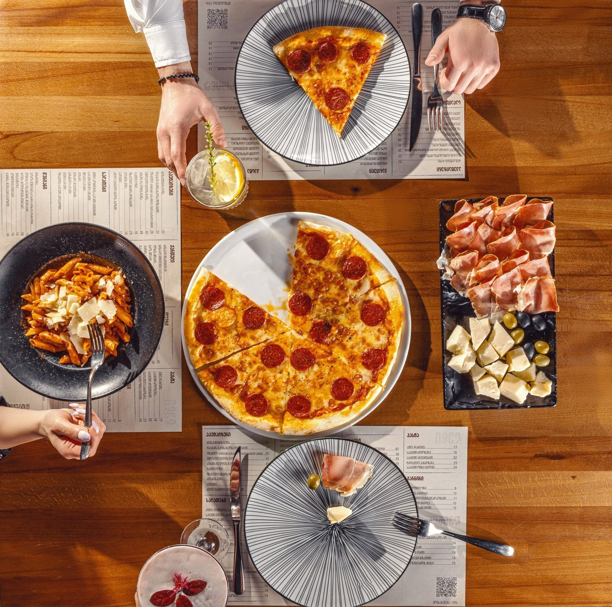
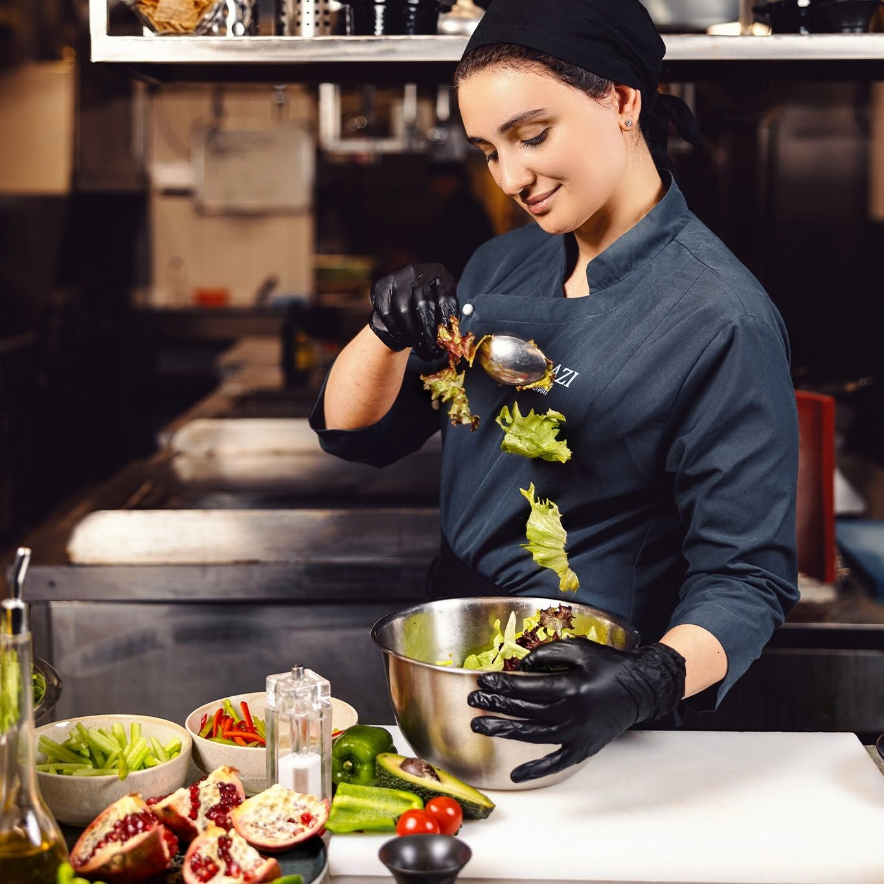
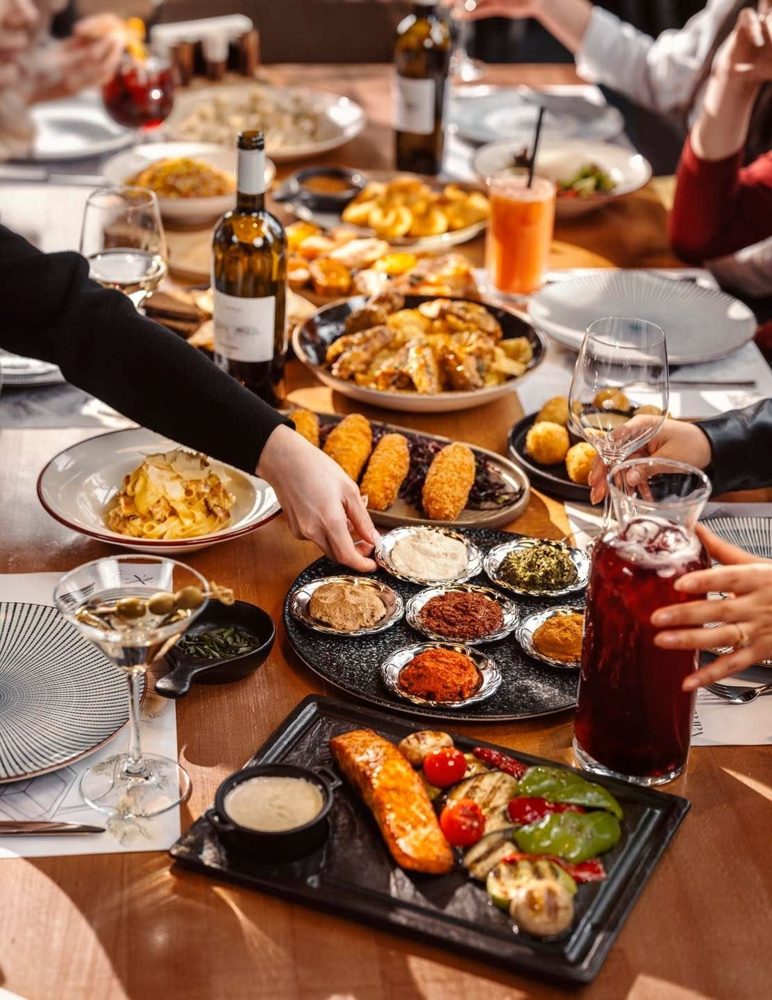

A journey of passion, heritage and Georgian hospitality — written one shared table at a time.

Varazi began as a modest beer garden and grill on Varaziskhevi Street — a few tables beneath the trees, a glowing mangal, and a simple promise: honest Georgian food and a cold draught for every neighbour.

As word spread, our kitchen grew. We brought in a full Georgian menu — hand-folded khinkali, bubbling khachapuri and slow-cooked clay-pot classics — alongside the grill that started it all.

Two decades in, Varazi had become a gathering place for the city — birthdays, reunions and quiet evenings alike. We renovated the garden, planted more green, and kept the table as generous as ever.

Today, Varazi is defined not by its size, but by its soul. We host fewer rushed meals and more real moments — rooted in heritage, refreshed with craft beer and care, always warm, always Georgian.
The details that turn a meal into a memory — devoted to the hands and hearts behind every plate.
Recipes passed down and folded by hand each day.
Live-fire grilling over vine-wood, every evening.
Lantern-lit seating beneath the trees and sky.
The kind of welcome that makes guests regulars.
Devoted to perfection — meet the hands and hearts behind every Varazi experience.


There is always room at our table. Reserve your place beneath the trees and become part of the next chapter.
Make a Reservation